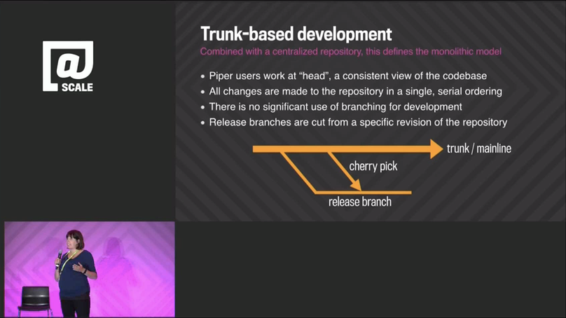

Ветка для релиза
Ветка: только когда необходимо, в случае несовместимой политики, как можно ближе к релизу, и вместо остановки работы
— Laura Wingerd & Christopher Seiwald (1998’s High-Level SCM Best Practices white paper from Perforce)Если команда выпускает релизы в свет каждый месяц, то у этой команды также есть промежуточные релизы с исправленными ошибками между плановыми релизами раз в месяц. Чтобы было легче, в командах, которые работают по Trunk-Based Development, создают релизную ветку почти перед релизом - например, за несколько дней до него. Эта ветка становится таким местом, где все стабильно, при условии что разработчики продолжают работать в полную силу и отправляют свой код в trunk.
Несовместимая политика (отсылка к цитате выше) - это когда в релизную ветку “не должен отправляться код, который пишется после ответвления от trunk”.
 (key)
(key)
^ Trunk, две с половиной релизные ветки, пять релизов (два запланированных, три незапланированных), и 2 исправления бага через cherry-pick
CD команды не делают релизные ветки
Команды с высокой пропускной способностью и Continuous Delivery могут это проигнорировать - если у них произошла неприятность при выкладке кода в бой, то они выбирают стратегию roll-forward для того чтобы поправить это. Roll-forward это такая стратегия, при которой баг исправляется в trunk и код выкатывается в бой также из trunk.Кто и куда отправляет код?
Разработчики с высокой пропускной способностью отправляют свой код в trunk (зеленые точки), и не замедляются или останавливают свою работу перед отведением ветки или непосредственной близостью к релизу. Разработчики как группа не отправляют свой код в релизную ветку (см.ниже).
(key)
Сама обрезка ветки является коммитом. Технически Subversion и Perforce будут иметь здесь более крупный коммит, но все системы VCS, используемые сегодня, будут считать коммит «легким» с точки зрения его влияния на историю/хранилище и времени, затрачиваемого на создание.
Эта красная точка - случайный сбой сборки, который (каким-то образом) был исправлен какое-то время спустя.
Позднее создание релизных веток
Некоторые команды делают релиз из тега в trunk и не создают релизную ветку для этого. Это само по себе является альтернативной практикой для “ветки для релиза”.
Эти команды ждут ошибку, которую необходимо исправить для релиза, прежде чем создавать ветку из тега релиза (если они не собираются просто выпустить еще один выпуск из основной ветки).
Брэд Эпплтон (Brad Appleton) отмечает, что многие не понимают, что ветви можно создавать задним числом. Это может использоваться в случае ошибок после «релиза из тега» или даже после изменений для мини-релизов.
Исправление в trunk ошибок, найденных в бою
Лушчая практика для команды, которая работает по Trunk-Based Development, это воспроизвести ошибку в trunk, поправить ее там же вместе с тестом, проверить что CI сервер это подтвердит, затем сделать cherry-pick этого кода в релизную ветку и подождать пока CI сервер проверит релизную ветку и подтвердит что с релизной веткой после cherry-pick все в порядке. Да, сборка на CI, которая защищает trunk, должна быть продублирована и должна защищать активные релизные ветки так же, как и trunk.
Cherry-pick это не обычный merge
Cherry-pick это merge, который забирает только один конкретный коммит (или несколько коммитов) и вливает их в выбранную вами ветку. Он не учитывает код, которые был написан до этого коммита, а учитывает только тот код, который был написан на момент отведения ветки. Все системы контроля версий отслеживают то, какие коммиты были добавлены, а какие нет, так что вы можете сделать сколько угодно cherry-pick позже.Cherry-picks ТОЛЬКО из trunk в релизную ветку
Вам не следует править ошибки в релизной ветке, полагая что потом вы сделаете cherry-pick обратно в trunk. Почему? Ну, может случиться такое что вы забудете это сделать в очень неподходящий момент. Такая забывчивость иногда может означать ухудшение работы кода в боевом окружении спустя несколько недель (и кого-то за это даже увольняют). Это может произойти если ошибка исправлялась уставшим разработчиком в ночи, который хотел обратно в постель спать.
 (key)
(key)
Для команд, которые работают по Trunk Based Development, это правило все еще плохо соблюдается или соблюдается с неохотой, даже если команда практикует все остальное, что связано с Trunk Based Development. Однако, достаточно всего одного неприятного случая для того, чтобы команда изменила свое отношение к этому.
Конечно, иногда вы совсем не можете воспроизвести ошибку в trunk. В этом случае вы должны сделать это наоборот, несмотря на все вышесказанное, но вы должны понимать, что таким образом ваш код рискует стать хуже.
Рэйчел Потвин (Rachel Potvin) из Google о Cherry Picks
В ходе выступления на конференции @Scale в сентябре 2015 г. «Почему Google хранит миллиарды строк кода в едином репозитории» был представлен слайд, на котором показан cherry-pick на диаграмме ветвления:

Докладчик, Рэйчел Потвин (Rachel Potvin), сказала (на 14 минуте):
“Итак, в Google у нас есть то, что называется Trunk-Based Development. Я должна отметить, что это сочетание разработки на основе магистралей с централизованным репозиторием, которое определяет монолитную модель управления исходным кодом. Итак, Trunk-Based Development для нас означает то, что обычно все пользователи Piper работают с HEAD или с одной копей самой последней версии кодовой базы. Когда разработчики делают коммиты в Piper, их изменения сразу видны и могут использоваться другими разработчиками. Создание веток для разработки в Google происходит крайне редко и Trunk-Based Development отчасти способствует этому, потому что у вас нет неприятных слияний из-за того, что вам нужно отправить код из долгоживущей ветки в trunk. Однако, ветки используются для релиза. В общем, обычно релизная ветка это слепок ветки trunk с каким-то количеством cherry-picks, которые были сделаны из trunk в релизную ветку.”
Мы сами решили выделить cherry-pick жирным шрифтом. Внимательные читатели заметят, что Рэйчел ссылается на другие ветки разработки, кроме trunk, по «редким» причинам. Мы можем включить наглость и предложить Google узнать немного больше о ветвлении по абстракции.
Роль “подтверждающий вливание кода”
Процесс вливания коммитов из trunk в релизнукю ветку выпуска с использованием «cherry pick» - это роль одного разработчика в команде. Или пара разработчиков, если вы занимаетесь экстремальным программированием. Даже в этом случае, это частичная занятость. Разработчику или паре, вероятно, необходимо составить список правил, прежде чем делать cherry pick. Правила вроде того, какой представитель бизнеса дает добро на вливание кода. Возможно, такая роль должна меняться каждый день.
Некоторые команды обновляют wiki для того, чтобы проверить что именно попало в релизную ветку после её отведения от trunk, а какие-то команды используют систему тикетов, поскольку они по своей природе прерывают процесс и требуют подпись (след, отпечаток) у тех, кто подтверждает вливание кода.
Релиз патча
Может такое случиться, что ваша команда выпустила релиз из релизной ветки, и теперь должна поправить ошибку, которая попала в продакшен. Если релизный цикл позволяет, то можно сделать cherry-pick исправленной ошибки из trunk в релизную ветку и из этой же ветки выпустить релиз.
Тег вместо ветки
Если есть возможность выпускать релиз из тега в trunk, то лучше делать именно так, т.к. для большинства команд это будет серьезной оптимизацией. Тег должен соответствовать номеру релиза (например, v1.1.1) и тогда дополнительные ветки не нужны будут вообще. Если в продакшене появилась какая-то ошибка и релизная ветка ранее была создана из тега, то релиз патча можно делать из релизной ветки.
Удаление релизной ветки
Релизные ветки удаляются через какое-то время после завершения релизного процесса. Удаляются не моментально, а когда точно становится ясно что релиз завершен и работы по нему больше не ведутся. Релизные ветки НЕ вливаются обратно в trunk. Обычно релизную ветку удаляют когда последующий релиз успешно выпущен. Это безобидная операция по наведению порядка - ветки могут быть достаточно легко восстановлены во всех системах контроля версий. В git перед удалением ветки релиза необходимо создать тег из выпущенного коммита, поскольку болтающиеся без дела коммиты будут отправлены в мусорку.
Внешние ссылки
show references